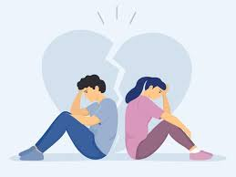

Relationship problems, like breakups or unreturned feelings, can cause mental health issues in young people. Many teens care deeply about their romantic relationships or crushes. When things don’t work out as they wish, they can feel frustrated and betrayed. These strong emotions can lead to sadness, low self-esteem, anxiety, and even depression. Some teens might start blaming themselves or think they’ll never find love again. They may lose interest in school, hobbies, or spending time with friends. Young people, especially students, are more sensitive to such emotions because it may be their first time encountering such issues. That’s why it’s important for young people to know that love problems are common, and it’s okay to feel upset. Talking to someone they trust—like a friend, parent, or counselor can help them heal and remind them that things will get better with time.
https://theannapurnaexpress.com/story/46775/